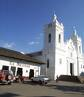
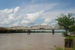

MUNICIPIOS DE LA PROVINCIA

La Provincia del Bajo Magdalena esta confrmada por tres municipios. Estos se relacionan en la siguiente tabla:
NUMERO
NOMBRE
1
2
3
Guaduas
Caparrapi
Puerto Salgar
CAPARRAPI
Año de fundación: 1675 • Fundador: congregación de clérigos • Erigido en municipio: siglo XIX • Altitud: 1.271 msnm • Temperatura: 23° C • Distancia de Bogotá: 186 km • Número de habitantes: 23.793
• Caparrapí, en lengua colima, quiere decir “habitante de los barrancos”.
GUADUAS

• Habitantes:33217 • Altitud:992 msnm • Clima:23 ºC • Año de fundación:1644 • Distancia a Bogotá:126
PUERTO SALGAR

Puerto Salgar es un municipio de Cundinamarca ubicado en la Provincia del Bajo Magdalena, se encuentra a 195 km de Bogotá y a 253 km de Medellín.

|

|